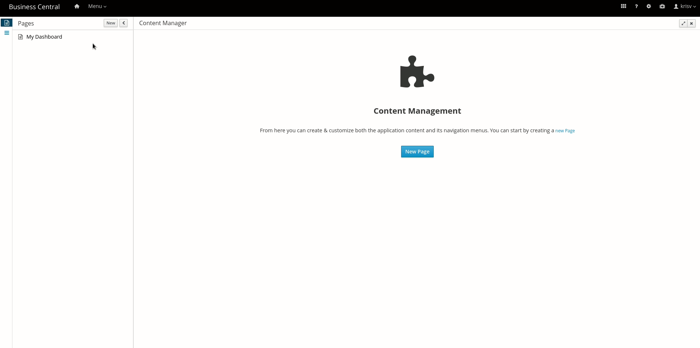
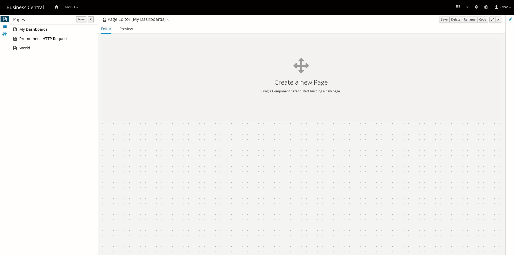
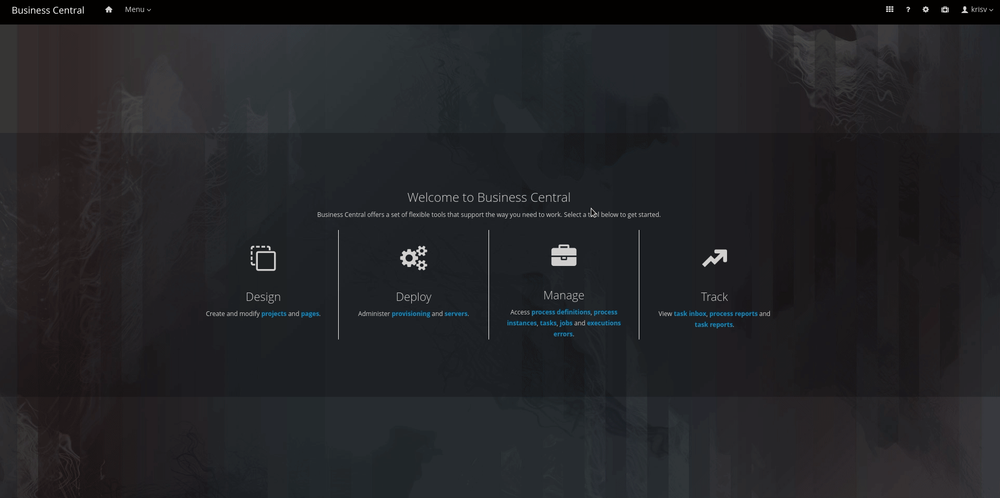
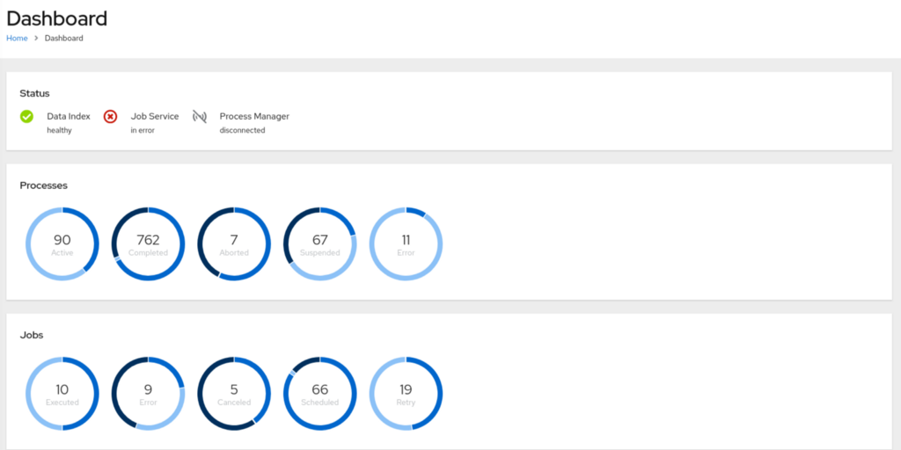
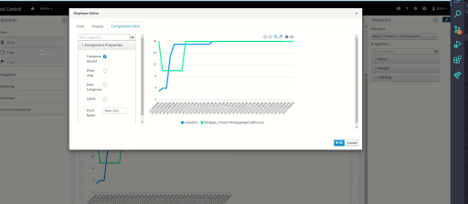
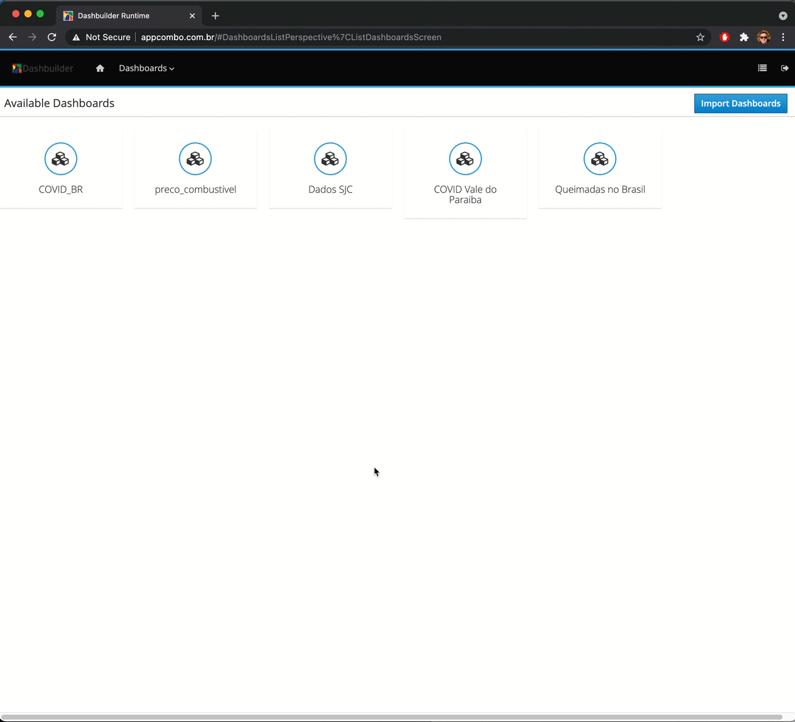
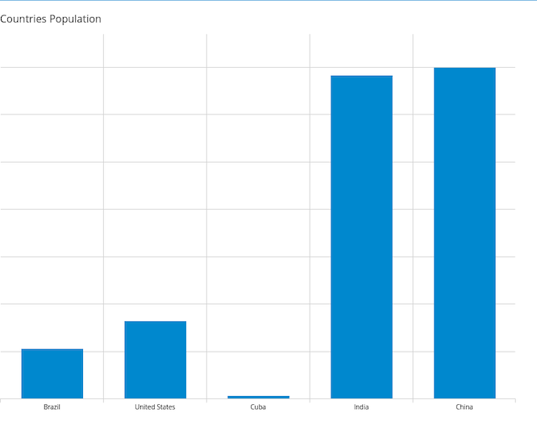
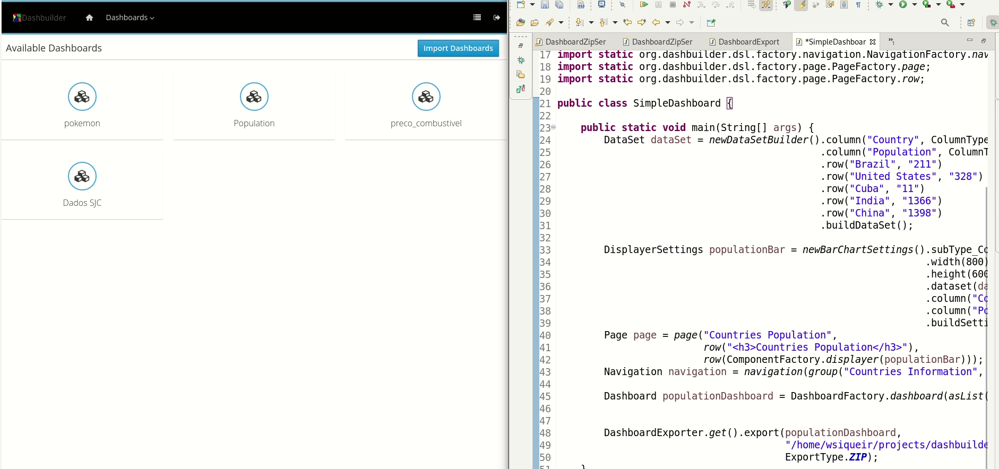

DashBuilder: an Apache licensed Business reporting and monitoring tool
DashBuilder is a tool for the building of reporting and monitoring business dashboards, licensed under the business-friendly Apache Software License (ASL). It has a strong emphasis on flexible navigation and page layouts, to ensure you can organize your content the way you want. It is decoupled from the data sources, with support for Prometheus, JDBC, Elasticsearch, Kafka, CSV, and Java Beans. It has a simple JavaScript API for extensions and provides out-of-the-box support for Victory Charts and Apex Charts – with the later providing time series support.

The website is very out of date, but we are in the process of revamping, which will be done in time for our next big DashBuilder release. Our main priority right now is migration to Quarkus to get a more cloud-native experience and to develop more getting-started guides. We also plan to revisit our JavaScript API for extensions, with possible integration with GrapeJS which has a really nice JavaScript API for what it calls Blocks. We also have ongoing work to provide a more generalized way for how we extend the UI for data sources. We are also integrating Dashboard components and pages with Multiplying Architecture (the technology behind Kogito Tooling).
We hope to have the improved getting started guides available in a few weeks, the Quarkus port within 2 months, so stay tuned on our blog for updates!
Below is an overview of the more interesting features and work streams for DashBuilder, along with links to posts with more details for each topic.
Flexible Layout and Navigation
One of the key features of Dashbuilder is that it allows you to compose full-feature business dashboards in a drag and drop way. You can combine a whole mix of components in your Dashboard Page, including reporting components (Bar, Pie, Line, etc.), HTML components, custom extensions, and even other Dashboard Pages (full recursive!).

After creating your pages, Dashbuilder also lets you create versatile navigation trees, allowing you to display your pages as application menu items or components like tiles, tree, and carousel.

Prometheus, Kafka, Elasticsearch, CSV and JDBC Support
Dashbuilder can extract data from heterogeneous sources of information such as Prometheus, JDBC, Elasticsearch, Kafka, CSV, and Java Beans. This raw data can be later grouped, filtered, transposed, and personalized and then used as input for each component.

For additional information, take a look at this post with a deep dive in our Prometheus support.
Victory Charts and Other Components
It is possible to use any data visualization library you want in DashBuilder using External Components. Use external components to either add new ways to visualize data like heatmaps or use alternative libraries such as Victory Chars.
Dashboard with Custom components:

Victory Chart Custom components:

Time Series with Apex Charts
We also recently introduced a new component based on Apex Charts to represent time-series metrics to smoothly support the new Prometheus data set provider.

Now, you can provide a custom data set or Prometheus metrics and create visualizations of your time series data on a line or area chart using DashBuilder. See this blog post for more details.
DashBuilder Lightweight Runtime and Multi-Tenancy
The traditional DashBuilder web application has the capability to author and run your Dashboards.
In order to expand our set of use cases and also target containerized environments, we recently released DashBuilder Runtimes, a lightweight application able to run dashboards with a lower footprint.
DashBuilder Runtimes can operate in two different modes. The first one, Static, focused on immutable images and able to display one dashboard per installation. The second, Multi-Mode, can run in a multi-tenancy model, allowing you to have multiple dashboards in the same installation.

For more details, check out the announcement of DashBuilder Runtime and our multi tenancy mode.
Easy way to import/export your dashboards
Ok, but how can I move Dashboards from authoring to runtime?
It’s super easy! Using our Import/Export tool, you can export a specific page or a set of pages along with its datasets to run it on DashBuilder Runtime!

For more details, check out this blog post.
Embedded Mode
With embedded mode, DashBuilder Runtime can be part of users’ applications. Every page of yours can be accessed via a specific URL.
We also provide a nice REST API that allows you to query the Runtime for details of existing dashboards and upload new ones directly.

For more details, check out this blog post.
JavaScript API for Extensions
But how to write an extension with my own component? You develop them using our public Javascript API. This API helps you consume data from DashBuilder, and you can use any Javascript libraries to build your visualizations.
Along with this API, it is also possible to develop your component using a component dev package, which emulates Business Central and sends configurable data sets and configuration to the component.

For more information, please check this blog post.
Declarative Programmatic API
Using the Declarative Programmatic API, you can create their Dashboards, pages, components, and data sets directly on Java. Here is an example of the usage of such API:
| import org.dashbuilder.dataset.* | |
| import org.dashbuilder.displayer.DisplayerSettings; | |
| import org.dashbuilder.dsl.factory.component.ComponentFactory; | |
| import org.dashbuilder.dsl.factory.dashboard.DashboardFactory; | |
| import org.dashbuilder.dsl.model.* | |
| import org.dashbuilder.dsl.serialization.* | |
| import static java.util.Arrays.asList; | |
| import static org.dashbuilder.dataset.DataSetFactory.newDataSetBuilder; | |
| import static org.dashbuilder.displayer.DisplayerSettingsFactory.newBarChartSettings; | |
| import static org.dashbuilder.dsl.factory.navigation.NavigationFactory.*; | |
| import static org.dashbuilder.dsl.factory.page.PageFactory.*; | |
| public class SimpleDashboard { | |
| public static void main(String[] args) { | |
| DataSet dataSet = newDataSetBuilder().column("Country", ColumnType.LABEL) | |
| .column("Population", ColumnType.NUMBER) | |
| .row("Brazil", "211") | |
| .row("United States", "328") | |
| .row("Cuba", "11") | |
| .row("India", "1366") | |
| .row("China", "1398") | |
| .buildDataSet(); | |
| DisplayerSettings populationBar = newBarChartSettings().subType_Column() | |
| .width(800) | |
| .height(600) | |
| .dataset(dataSet) | |
| .column("Country") | |
| .column("Population") | |
| .buildSettings(); | |
| Page page = page("Countries Population", | |
| row("<h3> Countries Population </h3>"), | |
| row(ComponentFactory.displayer(populationBar))); | |
| Navigation navigation = navigation(group("Countries Information", item(page))); | |
| Dashboard populationDashboard = DashboardFactory.dashboard(asList(page), navigation); | |
| DashboardExporter.get().export(populationDashboard, | |
| "/path/to/export.zip", | |
| ExportType.ZIP); | |
| } | |
| } |
It will generate the following dashboard:

We also have a “dev mode” connected to a DashBuilder Runtime, which automatically updates the DashBuilder Runtime while developing and exporting the dashboard.

How to start?
The best point to start with DashBuilder is following this blog post. You can also look at our demos on this repository, where we provide some Docker images ready to use.
Feel free to use the comment section here to ask any further comment!
Thanks for reading!

{kind=link}
{kind=link}
{kind=link}
{kind=link}
{kind=link}
{kind=link}
{kind=link}
{kind=link}